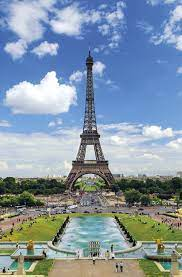
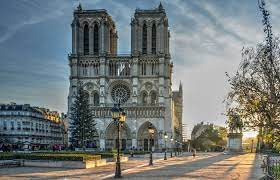
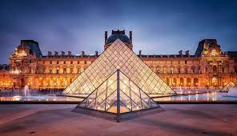
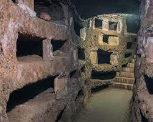

VIAJE Paris
Este viaje consistira en realizar una ruta por los sitios mas emblematicos y interesantes de la ciudad francesa
Este viaje consistira en realizar una ruta por los sitios mas emblematicos y interesantes de la ciudad francesa
Con sus 300 metros de altura sigue siendo la más alta de toda la ciudad. Fue parte de la exposición universal temporal en 1889 pero a pesar de las críticas de muchos artistas de la época, sus visionarios defensores lograron dejarla permanente. Hoy es el monumento que cobra entrada más visitado del mundo, con más de 7.1 millones de turistas cada año. Tiene 3 pisos donde se puede comer en renombrados restaurantes, mientras se disfruta de una vista panorámica de París. Y si la torre es una imagen impactante en el día.
Su construcción finalizada en 1.345 se había prolongado cerca de 2 siglos y luego sufrió una masiva destrucción durante la Revolución Francesa. Gracias a la fama adquirida por la obra The Hunchback of Notre Dame (El jorobado de Notre Dame) de Victor Hugo, el templo se pudo reconstruir con toda su majestuosidad gótica. Una de los lugares turísticos de París, seguirá siendo Notre Dame. Después del incendio del 15 de abril de 2019, ha sido cerrada en su totalidad y a sus alrededores. Caminar en el Rio Sena, será posible que veas la estructura.
Sin duda una de las atracciones de París más famosas es el Museo del Louvre. Considerado por muchos como el mejor del mundo, el Museo de Louvre representó un movimiento revolucionario de la democracia del arte en los museos, cuando en 1.793 abrió sus puertas con las colecciones privadas de la monarquía y la iglesia para el disfrute del mundo. Entre las obras maestras que allí se exponen está la “Gioconda” o “Mona Lisa” de Leonardo da Vinci y la “Venus del Milo”, cuyo autor podría ser Alejandro de Antioquía. Si vas el primer domingo de cada mes, la entrada es gratuita.
Por la falta de espacio para enterrar a los parisienses, en el siglo XVIII el gobierno francés decidió convertir en un cementerio común a una red de túneles y cuartos subterráneos localizados en lo que eran minas de piedra caliza. En la actualidad se conserva como un osario que alberga a más de seis millones de esqueletos humanos. Es el más grande de su tipo en Europa. Una atracción en París, para los más valientes.
